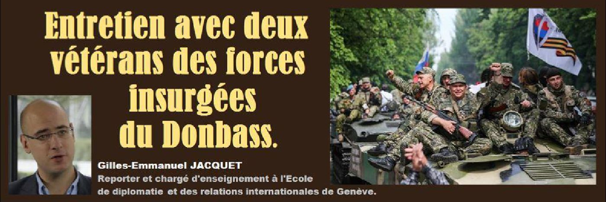

Entretien avec deux vétérans des forces insurgées du Donbass
par Gilles-Emmanuel JACQUET

« Nous sommes du Donbass, nous sommes des mineurs, des ouvriers mais nous nous sommes soulevés et nous nous sommes battus pour notre terre, pour notre ville ». Entretien avec deux vétérans des forces insurgées du Donbass.
Au printemps 2016 deux habitants de Snejnoe acceptèrent de parler des raisons de leur engagement au sein des forces insurgées de la Milice Populaire au début du conflit touchant la région du Donbass. Dmitri et Larissa (prénoms d'emprunts) témoignèrent de leur expérience du combat ainsi que des crimes de guerre commis par des membres des forces gouvernementales ukrainiennes ou des bataillons de volontaires pro-gouvernementaux ukrainiens.
Dmitri, un ouvrier d'une trentaine d'années, est originaire de Snejnoe. Son visage et son sourire chaleureux deviennent graves lorsqu'il évoque ses souvenirs du conflit qui touche sa région natale.
« Que puis-je vous raconter ? En 2014 nous nous sommes tous soulevés : Stepanovka, Saour-Moguila, Marinovka, Dmitrovka. À Stepanovka j'avais deux maisons. Quand la Garde Nationale est arrivée, mes maisons ont été complètement écrasées par les tanks. Ils ont fait un terrain plat de ces maisons où habitaient ma grande-mère, mes tantes, mes frères et mes sœurs. Nous sommes tous originaires de Snejnoe. Quand un des soldats de la Garde Nationale s'est approché de ma tante, elle lui a posé une question : « Dans quel but es-tu venu ici ? » Savez-vous ce qu'il lui a répondu ? « On nous a promis des terres et des esclaves »... telle a été sa réponse. « Quels esclaves ? », lui a demandé ma tante qui a 62 ans. Et le soldat lui a dit : « Ce n'est pas toi qui sera une esclave mais tes enfants et ta terre sera à moi ». Voilà, ils sont venus pour récupérer nos terres mais ils n'ont jamais pensé que nous ne serions pas dupes ».
« Nous sommes du Donbass, nous sommes des mineurs, des ouvriers mais nous nous sommes soulevés et nous nous sommes battus pour notre terre, pour notre ville. Bien sûr aujourd'hui notre situation est difficile, je ne le cache pas, il faut du temps pour que notre nouvelle république se mette en place mais nous avons vu bien pire que ça. Il y a eu des situations dans lesquelles nous n'avions même pas de pain. J'avais un commandant de poste à Saourovka, Dimka le mineur, que Dieu ait son âme. Il a été d'abord mon commandant, il a été tué à Rassypnaia. Les éclaireurs sont passés, on les a laissé passer. Les éclaireurs ont signalé que le passage était libre et quand la colonne s'est mise en marche, elle a été mitraillée ».
« Le jour où la bibliothèque a été bombardée et tout cet immeuble, ainsi que l'immeuble au 53 rue Léon Tolstoï, nous étions au « blockpost » [checkpoint] et empêchions les soldats ukrainiens de percer le front.
Cela se passait au mois d'août 2014, je ne me souviens pas de la date exacte. Les soldats ukrainiens ont d'abord essayé de percer à la hauteur de notre « blockpost » et nous avons riposté. Ils se sont retranchés dans le vieil aérodrome abandonné : il y avait les tanks, l’artillerie et ils tiraient sur la ville, sur les immeubles...vous irez voir ces immeubles, ce qu'ils ont fait...Ce sont ces gens qui disent qu'ils ne tirent pas sur la population civile. C'est eux qui ont commencé cette guerre ».
Photo : immeuble du centre-ville de Snejnoe bombardé par les forces gouvernementales ukrainiennes. Source : Gilles-Emmanuel Jacquet.
« Regardez, ce n'est pas nous qui sommes allés chez eux. Nous étions tranquilles ici. Ce qui se passait chez eux à Kiev, cela ne nous concernait pas. Nous sommes des mineurs, des bosseurs, tout simplement des bosseurs... Mais quand ils sont venus à Slavyansk... c'est à Slavyansk qu'ont eu lieu les premiers combats. J'ai beaucoup de camarades que j'ai connus lors des combats à Slavyansk : les uns sont en vie, les autres ont péri, beaucoup de nos gars ont été tués, je ne le cache pas. J'ai connu des gars, quelques personnes, originaires de Snejnoe, qui étaient partis en Russie depuis longtemps, qui avaient obtenu la nationalité russe et qui sont revenus pour défendre leur ville natale. L'un d'eux, « Yakout », a été tué. Il est enterré au cimetière d'Ovsyany [à Snejnoe] et le deuxième est rentré à la maison en Russie, il a été gravement blessé. Je ne sais pas combien de temps il va rester cloué au lit, en tout cas ça fait déjà deux ans. Il y a eu beaucoup de combats ».
« Le 11 mai nous étions à Donetsk, à la manifestation dédiée au deuxième anniversaire de la nouvelle république. Nous n'étions pas nombreux, seulement 32 personnes : les membres de la Milice Populaire, les autres étaient absents pour diverses raisons. Nous formions une colonne de la ville de Snejnoe et pendant que nous marchions, tout le monde, les femmes, les personnes âgées, les enfants, nous saluaient et criaient : « Snejnoe, la ville des héros ! ».
Photo : vue de la région depuis le sommet de la colline de Saour-Moguila. Source : Gilles-Emmanuel Jacquet.
Je peux vous dire que si nous n'avions pas défendu Snejnoe tout aurait pu être perdu parce que Saourovka est un endroit stratégique. Si les forces ukrainiennes avaient occupé ce lieu, elles auraient pu nous avoir bien en vue. De ce point on peut tirer à 50 km à la ronde, les obus de l’artillerie peuvent même atteindre la Mer d'Azov et Maryoupol. C'est la colline la plus importante de la région. Durant la Seconde Guerre Mondiale les fascistes ont aussi essayé d'occuper cette colline et il y eu des combats sanglants. De la même façon l'armée ukrainienne a essayé de percer le front à cet endroit ».
« Sur ce tableau d'honneur vous pouvez voir les gars qui ont été mes camarades de combat : Mossine, qui était sniper dans mon « blockpost ». Au départ il a été sous mes ordres, ensuite on l'a envoyé à Donetsk. Quand il a péri, j'ai été choqué. Denis [Pentchouk] était aussi au troisième « blockpost », il a été tué pendant une attaque de l'artillerie et des tanks. Deux personnes ont été tuées au cours de cette attaque. Marina [Yourieva], la cuisinière, était aussi une sniper. Avec ses camarades elle est tombée dans une embuscade tendue par l'armée ukrainienne près d'un petit village, c'est un endroit où des journalistes russes ont été tués. Tous ont été tués, sauf une personne qui a pu se sauver car elle était gravement blessée. C'est elle qui a raconté que toute la colonne, presque 200 personnes, a péri ».
« Beaucoup de personnes ne sont pas parties au combat, il y avait ceux qui avaient peur, ceux qui n'avaient pas peur... Au départ, je ne mentirai pas, j'avais aussi peur. Celui qui n'a pas peur est sot. Quand j'ai pris le fusil d'assaut pour la première fois et que je suis parti sur les positions, cela a été très difficile. Jamais je n'aurais cru que ce serait si difficile de tirer pour la première fois, de tuer une personne... Personne ne peut imaginer une chose pareille. Pendant un quart d'heure je n'arrivais pas appuyer sur la détente. Quand on se bagarre c'est différent, tout le monde peut le faire mais pour tuer il faut être très fort. Nous avons pu surmonter cela car dans nos têtes il n'y avait qu'une seule pensée : soit c'est toi qui les tues, soit c'est eux qui te tuent, il n'y a pas d'issue. Tu es obligé d’appuyer sur la gâchette car tu as envie de rester vivant, de vivre, de laisser une trace après toi ».
« On veut croire que tous nos gars, nos camarades n'ont pas perdu leur vie pour rien, pour que nous puissions défendre notre terre jusqu'au bout. Et c'est l'essentiel actuellement. On ne veut pas regarder le malheur dans notre ville, les ruines, l'anarchie que nous apporte le pouvoir ukrainien... Nous n'avions jamais imaginé que nous prendrions des mitraillettes dans nos mains. Je disais à mes camarades que je ne pouvais jamais imaginer qu'un jour je patrouillerai dans ma ville natale, où j'ai grandi et que j'aime tant, avec un fusil d'assaut. Personne ne s'y attendait. Jusqu'au dernier moment on n'y croyait pas. La dernière goutte c'est quand ils ont fait sauté l'immeuble ».
« Il y a beaucoup de gars qui ont péri dans le chaudron de Slavyansk, les autres ont été transportés chez nous à Snejnoe mais on ne voulait toujours pas y croire. J'ai pris les armes quand l'armée ukrainienne a bombardé l'immeuble [le 15 juillet 2014]. Les autorités ukrainiennes ont tout de suite annoncé en direct que leurs avions n'avaient pas effectué de vol mais alors qui a bombardé nos villes ? Nous les bombardons nous-mêmes ? Mais nous n'avions pas d'avions ! Nous n'avions que de l’infanterie, des fantassins, nous n'avions même pas d'artillerie lourde à cette époque. Nous n'avions que des mitraillettes, des carabines, des grenades et c'est avec ça que nous partions au combat. Aux « blockposts » les gens n'avaient que des bâtons ou des fusils : que peux-tu faire avec des bâtons contre les tanks ou l'artillerie lourde ? Rien ! On t'écrasera et puis c'est tout. Oui, plus tard nous avons eu des armes, de l'équipement, beaucoup d'équipement que nous avons pris à l'armée ukrainienne ». Larissa (prénom d'emprunt) intervient et ajoute qu'« Il y avait des cas où les soldats ukrainiens vendaient leurs armes pour 30,000 Hryvnia, alors nous réunissions la somme nécessaire et achetions ces armes. Ils n'avaient pas de quoi manger ».
Dmitri reprend : « A notre « blockpost » nous avons eu 11 soldats ukrainiens prisonniers, des contractuels. C'est eux qui nous ont raconté cette histoire, je ne peux pas certifier la véracité de leurs propos. Ce jour nous étions de garde au troisième « blockpost » et tout d'un coup nous avons vu un camion « Oural » avec un drapeau blanc qui avançait vers nous. Nous sommes restés vigilants car il y avait eu des situations au cours desquelles les autorités ukrainiennes sortaient avec des drapeaux blancs et une fois que les gens sortaient des abris ou des tranchées, les soldats ukrainiens tiraient dans la foule. Ils ont tué beaucoup de monde de cette manière. Alors nous étions en état alerte tant que le camion roulait vers nous mais les soldats [ukrainiens] qui étaient dans le camion n'étaient pas armés. Ils se rendirent en disant qu'ils ne voulaient pas de cette guerre. Nous les avons arrêtés sans leur faire le moindre mal. Ces soldats ont ensuite raconté qu'ils étaient de garde au « blockpost » d'Amvrosievka. Les membres de la Garde Nationale [ukrainienne] étaient venus les chercher, les avaient fait monter de force dans les camions et les avaient utilisés comme chair à canon lors des combats à Stepanovka. En même temps Yarosh [Dmytro Yarosh, le leader de Pravyï Sektor] et son bataillon ont fui le village ».
Larissa indique que « Les membres de la Garde Nationale emprisonnés ont été traités de la même façon que nos combattants : ils ont été nourris, soignés, pansés, opérés... Parfois on entendait les soldats ukrainiens dire, pendant que les médecins les soignaient : « Je vous hais, je continuerai à vous tuer... ». Ces soldats avaient le droit de téléphoner à la maison. Parfois nous-mêmes nous téléphonions à leurs familles, leurs parents et leur demandions de venir chercher ces jeunes recrues qui étaient utilisées comme chair à canon ».
Larissa (prénom d'emprunt) a une cinquantaine d'années et est aussi originaire de Snejnoe. Elle a beaucoup voyagé à l'époque soviétique, en URSS et dans des pays du Tiers Monde alors alliés du bloc socialiste. Comme Dmitri (prénom d'emprunt) elle a également rejoint les insurgés dès le début du conflit.
« J'ai toujours été en première ligne et une nuit je suis allée me laver, chez une femme. On faisait très attention à ne pas divulguer d'informations. Cette nuit-là « les nôtres » se sont repliés et je suis restée cinq jours en territoire « fasciste ». On m'a bien évidemment averti que je ne pouvais pas sortir car malheureusement il y avait beaucoup de traîtres et de délateurs. Au tout début ils dénonçaient gratuitement d'autres personnes : « Je n'aime pas le voisin, on peut le dénoncer ». Une femme, deux soldats...ils étaient des nôtres... Nous n'avons jamais attaqué, nous ne faisions que nous défendre. Il y avait deux blessés, elle les a laissés chez elle, elle était médecin et pensait qu'elle pourrait mieux s'en occuper mais les voisins les ont dénoncés. Ils [les combattants pro-gouvernementaux] sont venus et ont fusillé les gamins devant elle, sous ses yeux. Il y avait beaucoup de choses horribles, ils n’avaient même pas pitié des leurs ».
« Lorsque les premiers tanks ont attaqué le village d'Alexandrovka, avant Slavyansk, les gens sont sortis. Les vieillards et les femmes ont formé une chaîne pour ne pas laisser entrer les « ukrops » comme nous les appelions. Les soldats ukrainiens ont commencé à faire peur aux gens, à tirer en l'air. Les fascistes, eux, ont commencé à écraser des gens avec les tanks. Les soldats ukrainiens, voyant cela, ont jeté leurs armes et commencé à se retirer. Leurs camarades les ont tués en leur tirant dans le dos. Après ils ont récupéré leurs papiers d'identité et toutes les autres choses puis ont dit qu'ils étaient des traîtres afin de ne rien verser aux familles ».
« Il y avait encore des choses plus terribles, je ne sais pas s'il y a des traces, si nous en avons gardé des traces mais nos éclaireurs ont tout filmé. C'était d'une telle sauvagerie quand ils [les volontaires pro-gouvernementaux ukrainiens] fouillaient leurs collègues gravement blessés ou tués. Ensuite ils les jetaient dans un ravin ou balançaient des mines...Je ne sais pas pas si on a gardé ces images, on nous a promis de les conserver mais je n'en sais rien. J'ai vu cela moi-même, je ne raconte que des choses vues par moi-même. Il y avait un gamin d'à peu près 19 ans... quand les fascistes sont venus, ils étaient quatre et marchaient au pas de l'oie dans leur uniforme noir, dans la rue principale et lui, il était près du mur, les regardait. Je ne sais pas s’il était avec « nous » mais ils l'ont fusillé sans raison, tout simplement ».
Une résidente de Snejnoe également présente intervient brièvement : « Vous souvenez-vous d'un gamin de 13 ans qui a été battu à mort ? Il apportait le thé et le café au checkpoint ». Larissa s'en souvient et évoque une autre exaction commise par les combattants pro-gouvernementaux ukrainiens : « Ah oui, il y avait aussi une veille femme de 80 ans. Il faisait froid et personne ne nous procurait quoi que ce soit alors les gens nous apportaient à manger un peu de blé, un peu de pain et avec cela on faisait quelque chose à manger. Cette veille femme nous apportait des pirojki et du thé. Quelqu'un l'a dénoncée, ils l'ont battue à mort avec des bâtons ».
« Il y avait beaucoup d'horreurs, on ne peut pas se rappeler de tout. Il me semble que c'est la prière qui m'aidait. Ensuite on m'a fait sortir. J'avais le livre de prières de Sainte Matrona, je n’arrêtais pas de prier, j'avais peur. On m'avait dit de ne sortir nulle part mais j'avais vu des voisins dans la maison à côté. Avant ils me disaient « bonjour » et souriaient mais à présent ils ne me regardaient plus, ne me parlaient plus. J'attendais la « visite » [des pro-gouvernementaux] à n'importe quel moment. Je vis ensuite venir une femme et je me suis dit que c'était fini pour moi mais elle me dit que j'avais 20 minutes pour toutes les préparations et je suis partie. Le chauffeur de bus nous avait aussi avertis au départ que tous les symboles étaient interdits, pour eux [les pro-gouvernementaux] les rubans de Saint Georges étaient les plus irritants. Je ne m'étais pas aperçue que dans mon sac il y avait un ruban de Saint Georges, une médaille de jubilé et nous portions tous des ceintures religieuses. J'avais tout gardé et je ne m'étais même pas aperçue comment j'avais apporté tout cela, je n'avais eu que 20 minutes pour me préparer. Quand le bus a passé le premier poste de contrôle je n’arrêtais pas de prier, j'ai été très calme...il arrivera ce qu'il arrivera. Quand je suis arrivée à Donetsk nous avons passé le premier poste, tous les soldats n'étaient pas des fascistes. Il y avait un soldat qui a juste vérifié les papiers d'une seule personne et puis nous sommes passés par un autre poste où ils fouillaient tous les gens avec des sacs. Ils ne firent pas attention à nous et nous laissèrent passer. Quand je me suis ensuite retrouvée parmi les nôtres à Donetsk, j'ai vu ce que j'avais dans mon sac ».
« Il y avait beaucoup de croyants parmi nous et beaucoup de miracles se sont produits. Nous avons un monastère à Kasperovski où il y avait quelques moniales. D'un côté il y avait des Polonais, de l'autre il y avait le bataillon Aïdar et entre eux il y avait nos huit soldats. Ils sont venus voir les moniales en leur disant « Il faut que vous partiez, nous resterons jusqu'au bout » mais nous n'étions que huit et les autres étaient beaucoup plus nombreux.
Le commandant du bataillon Aidar Serhiy Melnychuk
Les moniales ne partirent pas et commencèrent à prier. Et là on aurait dit que le monde était devenu fou : les Polonais et les soldats du bataillon Aïdar s’entre-tuèrent. Vous pouvez y croire ou pas, vous pouvez demander au monastère ».
Un peu avant que la crise débouche sur un conflit armé, Larissa et d'autres habitants de la région protestèrent également contre des projets d'exploitation du gaz de schiste autorisés par le nouveau gouvernement ukrainien et qui menaçaient l'écosystème local : « Nous sortions pour manifester contre le gaz de schiste, nous avions une zone thermale unique aux alentours de Slavyansk, Svyatogorsk et Izioum. Il y a un lac de quelques millions d'années avec une eau très pure ayant des qualités exceptionnelles : ferrugineuse, sulfurée, avec du radon. Évidemment nous voulions protéger cette zone pour qu'il n'y ait pas d'exploitation du gaz de schiste. Nous n'avions rien, nous ne faisions que manifester. Nous n'avions rien et c'est après qu'on nous a dit qu’il y aurait des tanks.
Je n'y croyais pas, je me disais « Ce n'est pas possible, contre qui ? » mais quand nous avons commencé à monter des postes le fascisme avait déjà relevé la tête. Comment ? Nous n'avions pas d'armes.
De notre côté il n'y avait que 80 personnes réparties sur six postes. C'était pratiquement tout Slavyansk. C'est seulement quand les gens virent ce qu'était le fascisme que beaucoup de personnes vinrent nous soutenir des villages voisins de Slavyansk. Les gens ont compris mais avant les gens n'y croyaient pas ».
« Il y avait mon fils et encore huit soldats… nous avions deux fusils d'assaut avec un seul magasin et des cocktails Molotov. Quand on nous a dit que les tanks étaient réellement arrivés, je suis partie en courant de mon village mais après je me suis dit que je n'avais rien à faire là-bas sans arme, je serai plutôt un boulet. Après la bataille il n'y avait pas de victimes ni d'un côté ni de l'autre, à cette époque il n'y avait pas encore de bataillons punitifs. Deux personnes du côté ukrainien ont rejoint nos soldats alors que les autres s'étaient enfuis ».
« Après mon fils m'a téléphoné : « Maman veux-tu nous aider ? ». J'ai répondu « Bien sûr ! ». Nous n'avons jamais attaqué, nous nous sommes seulement défendus. Oui, nous avons voulu créer notre république car nous avons vu ce qui se passait. Pour eux [les pro-gouvernementaux ukrainiens] nous sommes une « sous-race », nous ne sommes pas des hommes. Ils disent « qu'est-ce que c'est huit millions ? Donnez-moi une mitrailleuse, je les fusillerai moi-même. Il restera un million d'hommes, nous ferons d'eux des esclaves ». Les premiers soldats faits prisonniers nous expliquaient que « le commandement nous a promis un hectare de terre et cinq esclaves, on nous a promis leurs maisons ». Vous voyez comme c'est absurde... de jeunes paysans qui ne savaient rien et ne comprenaient rien. Pendant les combats les plus graves, quand nous faisions prisonniers ces gens nous cherchions leurs adresses, informions leurs familles et demandions à leurs mères qu'elles viennent les chercher. Nous ne gardions que les plus violents issus des bataillons punitifs, ceux qui étaient venus pour nous tuer ».
« Une femme de Debaltsevo est venue à Snejnoe et elle raconta ce qu'elle y avait vu. Elle avait entendu un cri : il y avait un jeune soldat qui courait dans la rue et qui criait « Je ne veux pas tuer ! Je ne veux pas tuer ! » et qui a ensuite jeté sa mitraillette. Il a été poursuivi par les soldats du bataillon Azov ou Aïdar et il a été fusillé par eux. Ensuite ils ont récupéré ses documents et l'ont enterré. On ne connaît ni son nom ni d'où il vient. Ils n'avaient de pitié pour personne. Quand Slavyansk a été bombardée ils savaient où il y avait des postes mais ils tiraient sur les hôpitaux, les écoles maternelles. Mon fils a été encerclé... je me disais « tout mais pas la captivité » ... vous avez bien vu ce qu'ils faisaient. Certains ne pouvaient même pas se déplacer et après ils ne vivaient pas longtemps. Combien de personnes innocentes ont été emprisonnées : pour qu'elles puissent partir elles étaient obligées de signer des papiers prétendant qu'elles étaient des séparatistes et si elles ne les signaient pas elles étaient torturées ».
Partager cette page